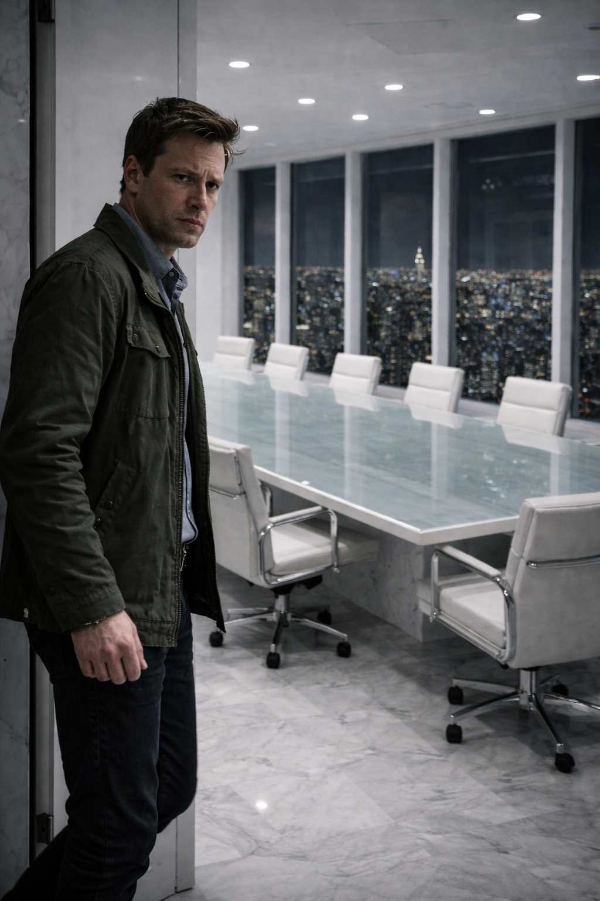
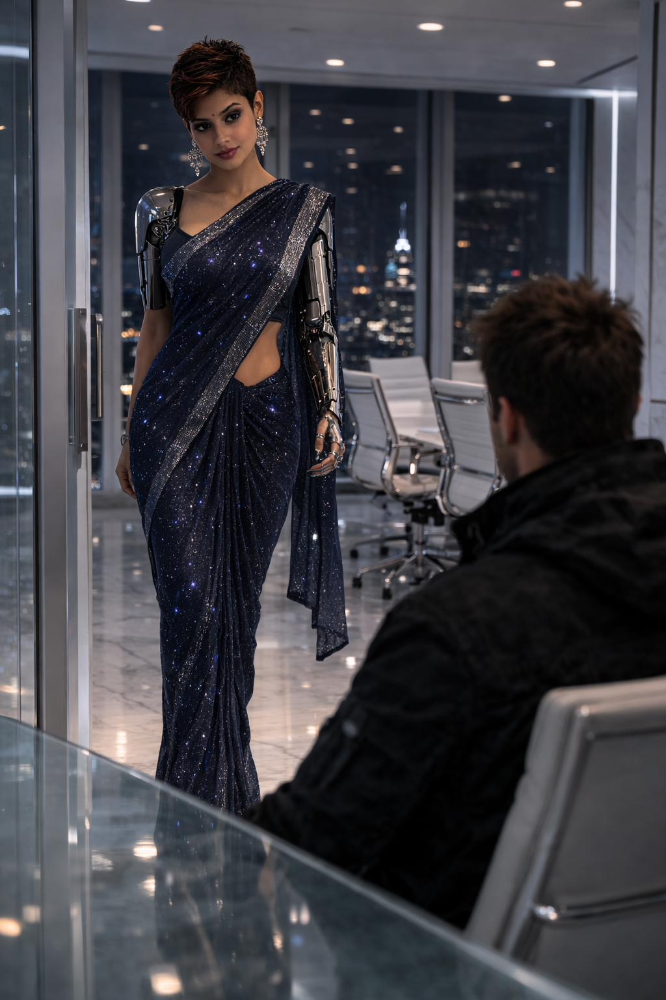
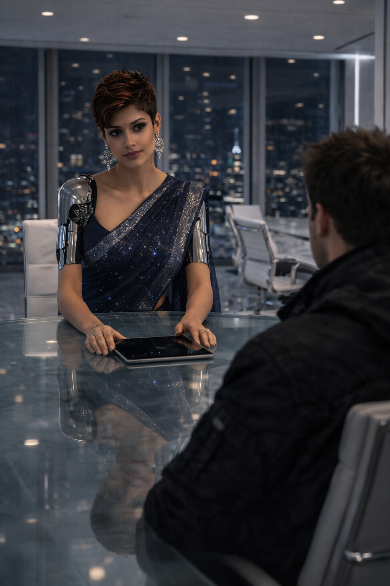
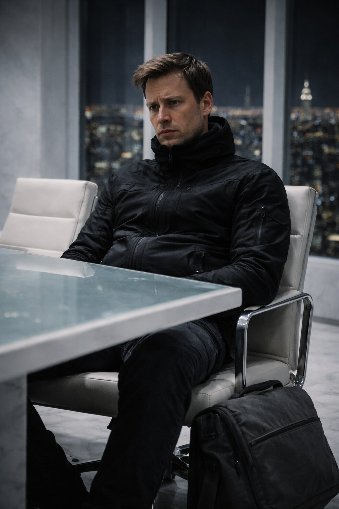
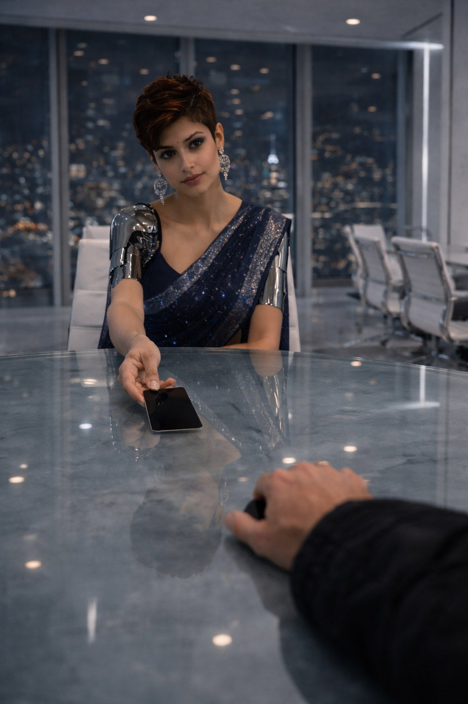
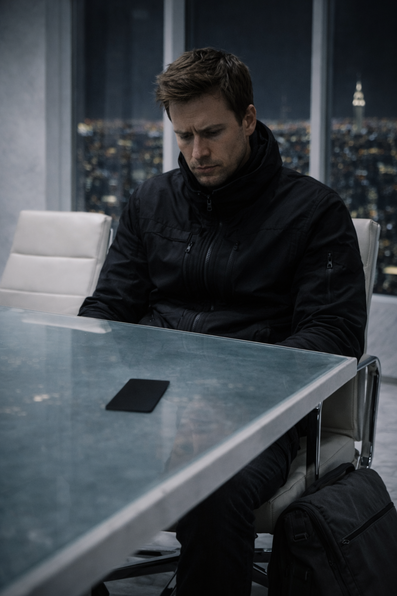
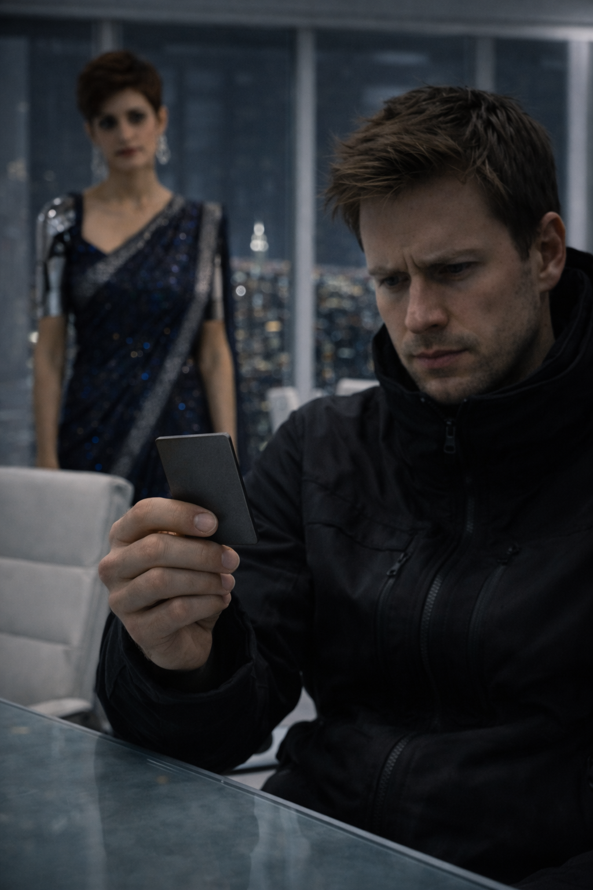

The Shell
Matte / Unbranded / Weatherproof
The Shark of Wall Street · Dossier
Cedric Ellis — Ghost Runner, World Trade Factory

Cedric Ellis had survived the B4 parking garage by being invisible. He had slipped past the weeping guards, the hissing Gaboon viper, and the security cameras without leaving a trace. But invisibility was a street-level trick. It didn't work on the 80th floor of the World Trade Factory.
The conference room was a terrifying marvel of modern architecture. It was entirely white—white marble floors, white leather chairs, and a massive frosted glass table that seemed to float in the center of the room. The only color came from the floor-to-ceiling windows overlooking the sprawling, glittering grid of Manhattan below. It felt less like an office and more like a surgical theater.
Cedric sat perfectly still, his matte-black techwear jacket zipped to his chin, his slate-grey messenger bag resting against his boot. He was currently carrying a two-million-dollar syndicate bounty on his head for losing ten million dollars in bearer bonds. Every shadow in the city belonged to a hitman looking for him.

The frosted glass door slid open silently. Diya walked in.
She didn't introduce herself. She didn't offer him a drink. She carried a single, translucent glass tablet.

She sat across from him, laying the tablet flat on the glass table. It immediately lit up, displaying a terrifyingly comprehensive web of Cedric's entire existence: his burner phone logs, his subway transit swipes, his childhood address, and the precise moment his syndicate handlers had issued the kill order.
"You are a liability, Cedric," Diya said softly, her voice cool and perfectly modulated. She didn't blink. "Your former employers have dispatched three separate teams to locate you. You called an encrypted dark web node begging for an audience with The Shark. Why should we absorb the risk of keeping a dead man alive? What could you possibly offer us that my algorithms cannot find themselves?"
Cedric swallowed hard. The air in the room was highly filtered and freezing cold.
"I can give you the man who broke your algorithms," Cedric replied, his voice steady despite the adrenaline. "The man who stole the ten million."
Diya's fingers paused over the glass tablet. "We have access to the city's entire closed-circuit grid. We have facial recognition software running through Homeland Security databases. We will find him."

"No, you won't," Cedric countered, leaning forward slightly. "Because satellites don't see him. He glides. He stays in the blind spots between the pillars. And he didn't just steal the bonds; he knew exactly how the guards would react to biological panic. He used a Gaboon viper and an albino python. It was orchestrated psychological warfare."
Cedric met her icy stare. "You can't calculate a snakebite on a Bloomberg terminal, Diya. You need someone who was in the room. I know how he moves. I know the scent of the leather he wears. I know the exact pitch of the whistle in his voice when he speaks."
Diya stared at him for a long, agonizing moment. She wasn't just analyzing his story; she was analyzing *him*.
She noted his perfectly unbranded clothing. She noted his lack of nervous tics. She noted that despite being hunted by a heavily armed cartel, his heart rate—which her tablet was currently monitoring via thermal micro-fluctuations in his face—was shockingly stable. He was a perfect, unreadable blank slate.
She tapped her earpiece, listening to a silent transmission from the penthouse suite above them. The Shark was listening.
"The Shark was intrigued by the mathematical anomaly of the heist," Diya murmured, her eyes never leaving Cedric's. "He recognizes that this 'Snake' is a rogue variable that needs to be quantified. But he also recognizes a gap in our own infrastructure."

Diya slid a sleek, obsidian-black keycard across the pristine glass table. It had no logo, no magnetic strip, and no name.
"Our empire is digital. We move billions of dollars in milliseconds using offshore dark pools," Diya explained smoothly. "But occasionally, the physical world requires our attention. A physical ledger. An encrypted hard drive. A diamond. Items that cannot be transmitted over a fiber-optic cable. Items that require a delivery mechanism completely devoid of a digital footprint."

Cedric looked down at the black card.
"Your old identity is dead, Cedric. The syndicate believes you drowned in the East River an hour ago. I have scrubbed the surveillance footage and manufactured the police reports," Diya said, standing up from the table. "Welcome to Obsidian Capital. You are no longer a target. You are our Ghost Runner. You are invisible."
Cedric picked up the keycard. It was heavy, made of solid tungsten. He had walked into the World Trade Factory as terrified prey. He was walking out as a phantom.

Ghost Kit — Scene Objects